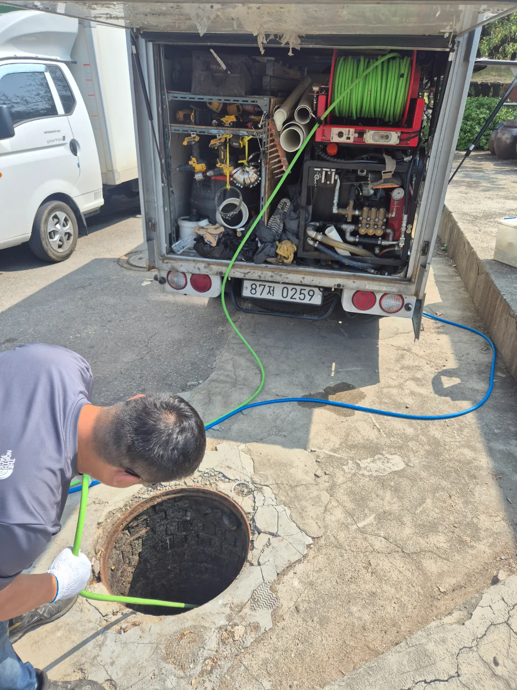
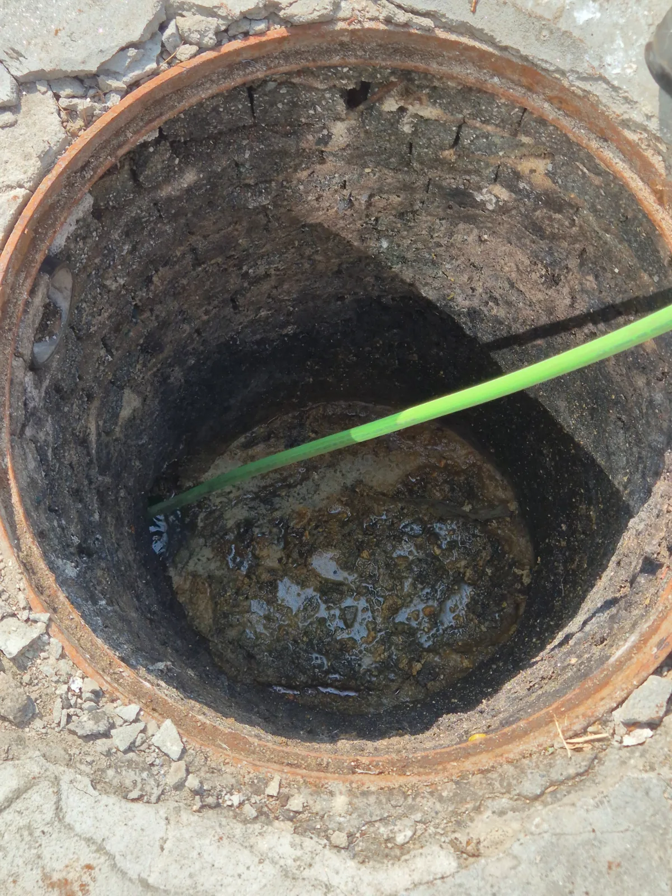

시흥시 과림동 하수구막힘, 현장 도착 후 진단
신라건축설비는 시흥시 과림동 하수구막힘 현장에서 맨홀과 연결 배관의 상태를 확인했습니다. 오수와 식당에서 나오는 하수가 함께 흐르는 구조였으며, 맨홀 출수배관 쪽에 막힘이 발생한 상태였습니다.
특히 식당 하수구에서 이어지는 배관의 막힘이 심했습니다. 맨홀 출수부만 작업하는 것으로는 연결 구간의 막힘이 남을 수 있어, 식당 배수 연결 배관까지 고압세척 범위에 포함했습니다.
1단계: 증상 확인과 필요한 장비 작업
맨홀을 열어 배관 연결 상태와 작업 지점을 확인했습니다. 이번 작업의 핵심은 맨홀에 고인 물을 처리하는 데 그치지 않고, 물이 빠져나가는 출수배관과 식당 배수 연결 구간의 통로를 확보하는 것이었습니다.
맨홀을 통해 배관 내부로 호스를 투입하는 방식으로 고압세척을 준비했습니다. 고압수를 이용해 폐색 구간의 이물질을 밀어내고 배수 흐름을 회복하기 위해 차량 탑재형 고압세척 장비를 사용했습니다.

2단계: 원인 구간 처리와 정상 작동 확인
맨홀 출수배관과 식당 배수 연결 구간에 고압세척을 진행했습니다. 막힘이 특히 심했던 식당 쪽 배관도 함께 세척하여 막힌 구간을 뚫었습니다.
작업 후에는 물이 원활하게 빠지는 것을 확인했습니다. 다만 시관로와 가장 가까운 맨홀의 배관이 깨져 있어, 배수가 회복됐다는 이유만으로 전체 작업을 마무리할 수는 없었습니다. 고압세척은 배관 내부의 막힘을 해소하는 작업으로, 파손된 배관 자체를 복구하려면 별도 공사가 필요하기 때문입니다.

작업 결과와 재발 방지 안내
시흥시 과림동 하수구막힘 현장은 고압세척 후 폐색 구간이 뚫리면서 배수가 원활해졌습니다. 이번에 완료한 작업은 식당 배수 연결 배관과 맨홀 출수관의 막힘 해소이며, 파손 배관에 대한 후속 공사는 남아 있습니다.
이에 2일 후 별도로 마련되어 있던 맨홀을 활용해 배관을 신설하고 배수 경로를 분기하여 연결하기로 했습니다. 신라건축설비는 현장에서 확인한 상태를 바탕으로 고압세척으로 해결할 구간과 배관공사가 필요한 부분을 구분해 대응하고 있습니다.
식당 하수구는 기름과 많은 음식물 찌꺼기를 한꺼번에 흘려보내지 않도록 관리하는 것이 좋습니다. 배수 지연이 반복된다면 식당 내부 배수관뿐 아니라 외부 맨홀과 출수배관의 상태까지 함께 점검해야 합니다.
최종 조치: 맨홀 출수관과 식당 배수 연결 배관을 고압세척해 막힌 구간을 뚫고 원활한 배수를 확인했습니다. 시관로와 가까운 맨홀의 파손 배관에 대응하기 위해, 2일 후 별도로 마련된 맨홀에 배관을 신설하고 분기 연결하는 공사를 진행하기로 했습니다.
현장 방문 전 확인하는 비용과 작업 범위
신라건축설비는 현장 증상과 배관 구조를 확인한 뒤 필요한 작업과 예상 비용을 안내합니다. 단순 관통으로 해결되는지, 배관내시경·석션·고압세척 또는 추가 장비가 필요한지는 현장 상태에 따라 달라집니다. 출장비와 야간 작업비, 추가 장비 비용이 발생할 수 있는 경우 작업 전에 먼저 설명하고 동의를 받은 범위에서 진행합니다.
업체를 선택할 때 확인할 사항
무조건적인 ‘0원’ 표현보다 실제 작업 범위, 추가 비용 조건, 사용 장비와 사후 대응 기준을 확인하는 것이 중요합니다. 해결되지 않았을 때의 비용 기준과 작업 후 동일 증상 발생 시 점검 범위를 사전에 문의해두면 불필요한 분쟁을 줄일 수 있습니다.
시흥시 하수구막힘 자주 묻는 질문
하수구막힘은 왜 반복되나요?
시흥시 과림동 현장처럼 맨홀 출수배관이 막혀 배수가 원활하지 않았습니다. 연결된 배관 중에서는 식당 하수구에서 이어지는 구간의 막힘이 특히 심했습니다. 증상은 원인이 현장마다 다를 수 있습니다. 배관 내부 기름 슬러지·생활 오염물·스케일이 충분히 제거되지 않았거나 오수관·공용배관 구간에 문제가 있으면 반복될 수 있습니다. 재발 시 막힌 위치와 배관 상태를 함께 확인합니다.
하수구가 역류하거나 물이 안 내려가면 하수구뚫는업체를 불러야 하나요?
바닥 배수구가 역류하거나 여러 배수구에서 동시에 물이 빠지지 않으면 단순 배수구 막힘보다 깊은 배관이나 공용배관 문제일 수 있습니다. 전문 장비로 원인 구간을 확인하는 것이 좋습니다.
여러 배수구가 동시에 막히면 공용배관이나 오수관 문제인가요?
동시에 여러 곳에서 배수 불량과 역류가 발생하면 메인배관·오수관·공용배관을 의심할 수 있지만 건물 구조마다 다릅니다. 배관내시경과 현장 진단으로 구간을 구분합니다.
하수구뚫는업체는 어떤 장비로 작업하나요?
현장에 따라 샤프트, 석션, 배관내시경, 고압세척 장비 등을 사용합니다. 단순 관통이 필요한지 배관 내부 세척까지 필요한지는 오염 상태와 막힘 원인에 따라 판단합니다.
하수구 고압세척은 언제 필요한가요?
기름 슬러지나 배관 내부 오염이 넓게 쌓여 반복 막힘이 생기는 경우 고압세척이 효과적일 수 있습니다. 모든 하수구막힘에 고압세척을 적용하는 것은 아니며 먼저 배관 상태를 확인합니다.
하수구막힘 비용은 어떻게 정해지나요?
막힌 위치, 배관 길이와 구경, 공용배관 여부, 내시경·샤프트·고압세척 등 장비 투입 범위에 따라 달라집니다. 추가 작업이 필요한 경우 진행 전에 범위와 비용을 안내합니다.
하수구막힘 서울·경기 출동지역
신라건축설비는 시흥시 과림동 현장을 포함해 서울 25개 구와 경기도 31개 시·군의 배관 문제를 상담합니다. 현장 거리와 기사 배정 상황에 따라 출동 가능 여부를 먼저 안내드립니다.
서울 전 지역
강남구 · 강동구 · 강북구 · 강서구 · 관악구 · 광진구 · 구로구 · 금천구 · 노원구 · 도봉구 · 동대문구 · 동작구 · 마포구 · 서대문구 · 서초구 · 성동구 · 성북구 · 송파구 · 양천구 · 영등포구 · 용산구 · 은평구 · 종로구 · 중구 · 중랑구
경기도 주요 출동지역
수원시 · 용인시 · 고양시 · 화성시 · 성남시 · 부천시 · 남양주시 · 안산시 · 평택시 · 안양시 · 시흥시 · 파주시 · 김포시 · 의정부시 · 광주시 · 하남시 · 광명시 · 군포시 · 양주시 · 오산시 · 이천시 · 안성시 · 구리시 · 의왕시 · 포천시 · 양평군 · 여주시 · 동두천시 · 과천시 · 가평군 · 연천군